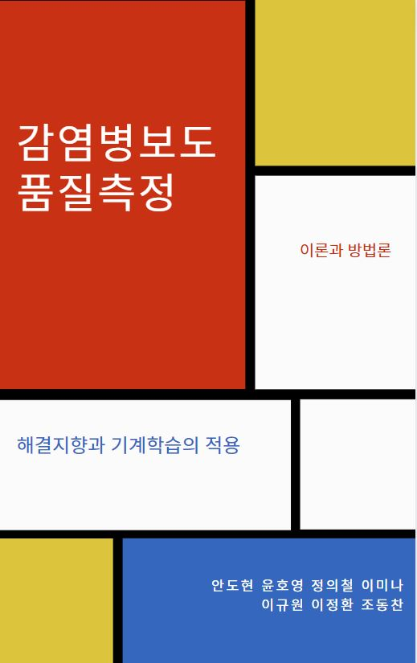

감염병보도 품질측정
해결지향과 기계학습의 적용

언론은 코로나19 상황에 대해 신속하게 많은 양의 뉴스를 제공해 신종바이러스로 인한 위기 극복에 기여했지만 과오도 적지 않다. 문제의 지적에 치중해 과도한 불안과 공포를 조장했을 뿐 아니라 오보도 적지 않았다.
한국헬스커뮤니케이션학회는 한국언론진흥재단의 후원을 통해 과도하게 부정적인 측면을 강조하는 기존 감염병보도의 한계를 극복하기 위한 방법을 모색했다. 이를 위해 감염병보도의 품질측정에 대한 이론과 방법론을 탐색하는 과제를 수행했다.
이론적으로는 해결지향 접근을 통해 건설적인 감염병보도가 언론 현장에 확산됨으로써 감염병보도의 품질을 제고할 수 있는 방안을 마련을 시도했다.
방법론적으로는 기계학습 방법(이론기반 토픽모델링과 비지도기반 자연어 생성)을 적용해 보도품질측정의 자동화 방법을 모색했다.

The online version of this book is licensed under the Creative Commons Attribution-NonCommercial-ShareAlike 4.0 International License.